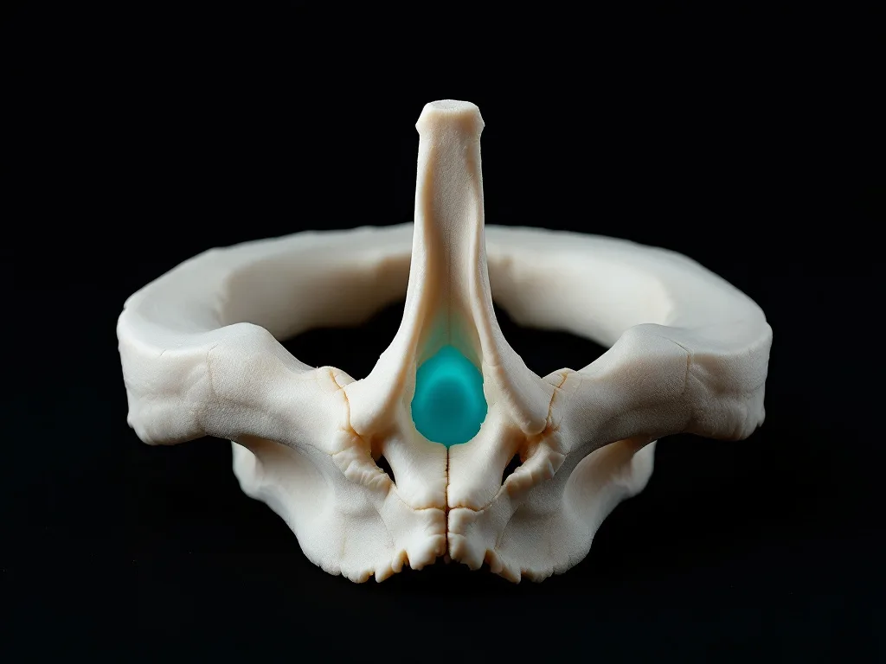

The headaches started after the crash
This page is general information, not medical advice. An examination is needed to know whether we can help you.
A headache that began, or changed, after a collision is a different question from a headache you have always had. This is the San Rafael practice for auto-accident injuries, and this page is written for the first kind. Before any examination, the price of it goes in writing, through a Good Faith Estimate.
The headache that arrives three days late
You walked away from the crash. You told the officer you were fine, and you meant it. Then the headaches started on the Thursday.
This is the single most common way an injured person ends up contradicting themselves. The adjuster has "no complaint of injury at the scene" written down, and now there is a headache. Nothing dishonest has happened. Delayed onset is ordinary. But the space between the collision and the first documented examination is a gap in the record, and a gap gets read as evidence that the injury was not serious. That is the mechanism, and it is worth understanding before it is working against you.
What most people do in that gap is one of three things: nothing, in the hope it settles; painkillers from urgent care; or waiting until the insurance claim resolves before dealing with any of it.
Three things you can do after reading this page
Find out whether the headache is coming from your neck.
A headache that starts in the neck and refers into the head is mechanically different from a headache disorder that predates the crash. It is examined differently and it is treated differently. What that lets you do: stop managing a neck injury as though it were a primary headache condition.
Know the cost before you commit.
You see the price of the evaluation in writing before it happens. The routes that fund it, and what happens if the claim fails, are set out in full on the money page.
Get "the headaches started after the crash" recorded as a finding rather than a memory.
Onset, frequency, what provokes it, what it was like before the collision. Written down while you can still describe it accurately, which is a window that closes faster than people expect.
What the examination actually consists of
01
The headache history, taken against the collision.
When it started relative to the impact. Where it begins and where it travels. What makes it worse. And the question the old version of this page never asked: was there anything like this before the crash. That last answer decides how the finding is written down, and pretending the answer is always no would not survive five minutes of scrutiny.
02
The cervical examination.
Range of motion, the upper neck segments, and the muscles that refer pain into the head. There is a real distinction between a headache arising from the neck and a headache that merely keeps company with neck pain, and the examination is how you tell them apart.
We describe what we examine and what care consists of. We do not tell you in advance what it will do for you.
03
What changes if the pattern is not mechanical.
Some headaches behave like migraine and not like a neck-referred headache: the way they build, what sets them off, what comes with them. If that is the pattern, we say so, and the plan changes accordingly.

Where we stop
We are not a medical doctor's office. No surgery and no prescriptions. We are not a law firm either, and this is not an emergency room. We do not manage concussion. Some post-collision headaches need an emergency department rather than an appointment, and the ones that do are:
- a headache that is the worst you have ever had
- changes in vision
- vomiting
- confusion that is getting worse
- weakness or numbness that is spreading
If that is you, stop reading and get emergency medical attention. That is not us being cautious for the sake of it. It is the honest boundary of what a chiropractic examination is for.
Medication manages pain. Our aim is to address the mechanical injury causing it. Both have a place, and for some injuries you need both. Nothing on this page is an argument that a medical doctor's care is worth less than ours.
Around the care itself we can truthfully offer orthopaedic and neurological examination, chiropractic adjustment, which is a controlled movement applied by hand to a joint that is not moving well, insurance verification, medical-lien billing and coordination with your attorney.
What a first appointment involves is set out here: your first visit.
Proof you can check, or none at all
We publish no rating, no review count, and no figure about how many headache patients get better.
There was a statistic on the old version of this page, borrowed from a trade association and describing that association's own members. It told a person with a headache after a car crash precisely nothing, and it is gone.
What we will stand behind is the boundary in where we stop: the list of headaches that belong in an emergency department rather than here. A practice willing to publish the cases it should not take is making a checkable claim. A rating is not.
What this page replaces
What used to sit on this URL was the practice's own 2019 vendor template: headaches from looking at a phone, headaches from long gaming sessions, brain freeze, a list of serious brain conditions, a trade-association statistic, and a paragraph explaining that what a medical doctor would give you merely masks the problem. All of it on a page whose readers have just been in a car crash.
The disparagement had to go, and so did the sentence asserting that the effect of care on headaches was settled fact. When the owner reviewed the claims on these pages in 2026, the instruction on that set was to drop all of them. What replaced them describes a process instead of promising a result.
The stance line, if this page has one: a headache that started after a collision is a different question from a headache you have always had, and this page is written for the first one.
One niche, one page per diagnosis, each written for the crash case.
Questions a post-collision headache page actually receives
My headaches started four days after the crash. Is it too late?
No. The reason to be examined sooner is that onset gets recorded while you can still describe it precisely, not because a door closes. We write down when it started, what it does, and what changed.
I already got migraines before the accident. Does that mean I have no case?
It means the examination has more work to do, not less. A pre-existing pattern and a change in that pattern are both recorded, and the change is the part that matters clinically. What an insurer concludes about it is their decision, and we will not predict it for you.
Who pays for this?
There is no published rate card. Care is paid through auto or health insurance, a medical lien against the personal-injury settlement, or cash, decided case by case. See the money page.
What if the claim fails, or settles for less than the bill?
You owe nothing. Care is on a lien, you are billed nothing while the case is open, and we are paid from the settlement. If the case is not accepted, is lost, or settles for less than the bill, the balance is written off in full.
Should I be worried this is a concussion?
Possibly, and that is not a question for us. The red flags in where we stop mean emergency care rather than an appointment here. We do not manage concussion, and a page that pretended otherwise would be selling you something it cannot deliver.
You get the price in writing before the examination happens. The estimate is the artifact that makes that promise checkable. See the written estimate.